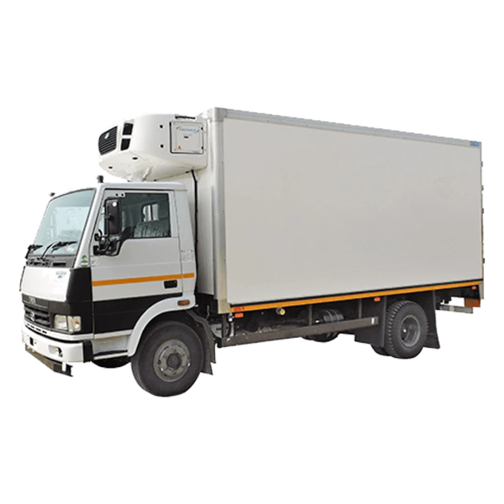

Термокузов
Подбираем утепление и конструкцию под тип автомобиля, груз и требуемый температурный режим.
Переоборудуем транспорт в полноценную холодильную единицу: утепляем кузов, подбираем установку, выполняем монтаж и запускаем систему под ваш груз.

Изготовление и переоборудование рефрижераторов
Сначала уточняем груз, температуру перевозки, маршрут и базовый автомобиль. Затем подбираем конструкцию кузова и холодильное оборудование, чтобы система работала в реальных условиях.
Подбираем утепление и конструкцию под тип автомобиля, груз и требуемый температурный режим.
Выбираем установку с учётом объёма кузова, режима перевозки и условий эксплуатации.
Подключаем питание, защиту и управление так, чтобы система была обслуживаемой.
Проверяем герметичность, петли, уплотнения и узлы, влияющие на потери холода.
Проверяем работу на режиме, объясняем эксплуатацию и план сервисного обслуживания.
Правильный проект начинается с груза и маршрута. Это помогает избежать недостаточной мощности, лишнего веса и лишних затрат в работе.
Укажите, нужен ли новый кузов или переоборудование существующего. Состав оборудования и стоимость согласуем после уточнения исходных данных.
Модель и состояние оборудования, результаты диагностики, необходимые детали и объём работ. Состав и стоимость согласуем до ремонта или монтажа.
Марка автомобиля, размеры кузова, груз и требуемая температура. Личные документы и другие лишние сведения присылать не нужно.
Свяжитесь с мастером. Срок зависит от диагностики, объёма работ и доступности деталей. Время приёма или выезда подтвердим отдельно.
Форма ниже подготовит текст для WhatsApp. Отправьте его в самом приложении. Если не хотите пользоваться мессенджером, позвоните по указанному номеру.
Давайте разберёмся
Марка автомобиля, размеры кузова, груз и требуемая температура.
+7 902 555 12 00Владивосток и Приморье.
Приём техники и выезд — по согласованию.